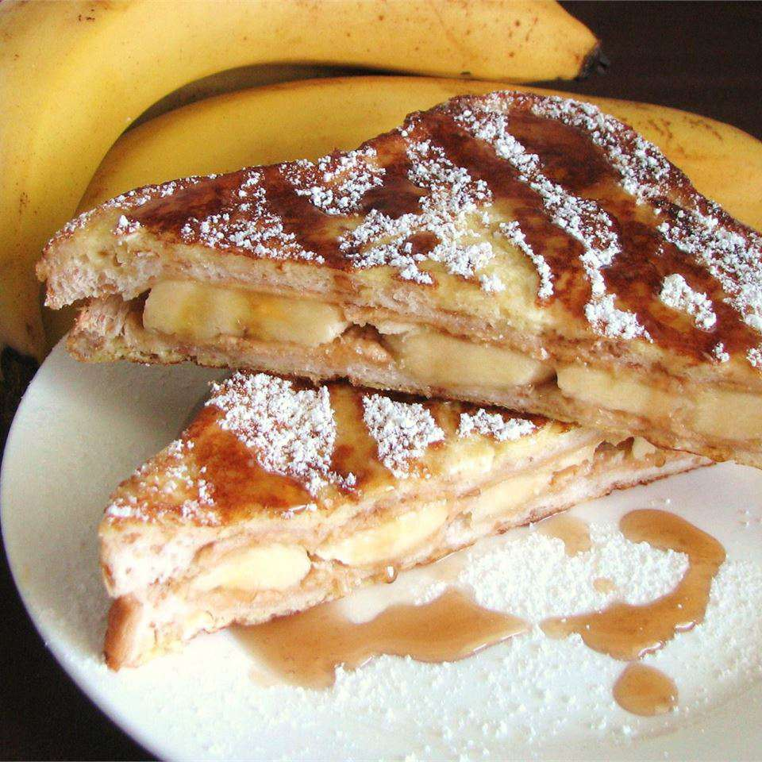

Home
Banana Peanut Butter French Toast

Easy unique breakfast dish, top with cinnamon and syrup
Ingredients
- 1 egg
- 1 dash vanilla extract
- 2 tablespoons creamy peanut butter
- 2 slices bread
- 1 small banana, sliced
- 2 tablespoons butter
Instructions
- Lightly beat egg and vanilla together in a shallow bowl.
- Spread 1 tablespoon of peanut butter on top of each slice of bread. Arrange banana slices on top of peanut butter on one slice of bread; place the other slice of bread, peanut butter-side down, on top of the banana to make a sandwich.
- Melt butter in a skillet over medium heat. Dip sandwich into egg mixture until well coated; transfer into the heated skillet. Cook until golden brown on one side, about 2 to 3 minutes; flip and continue cooking until other side is browned, about 2 minutes more. Serve hot.